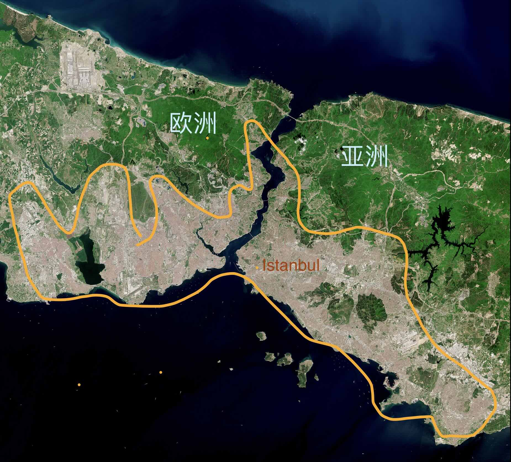
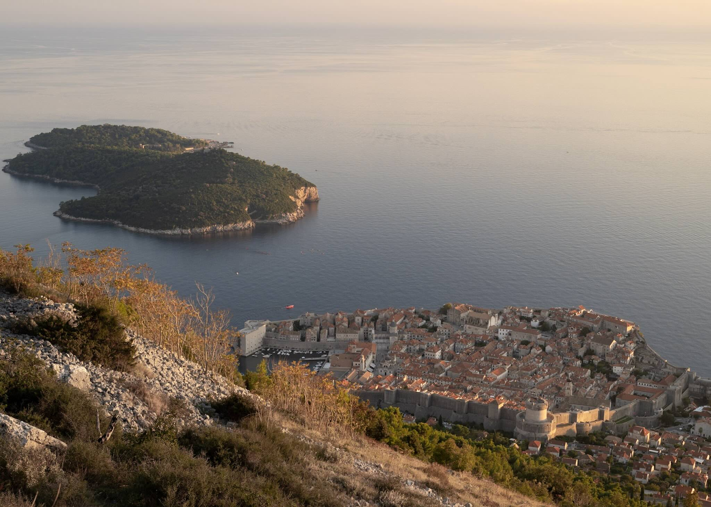
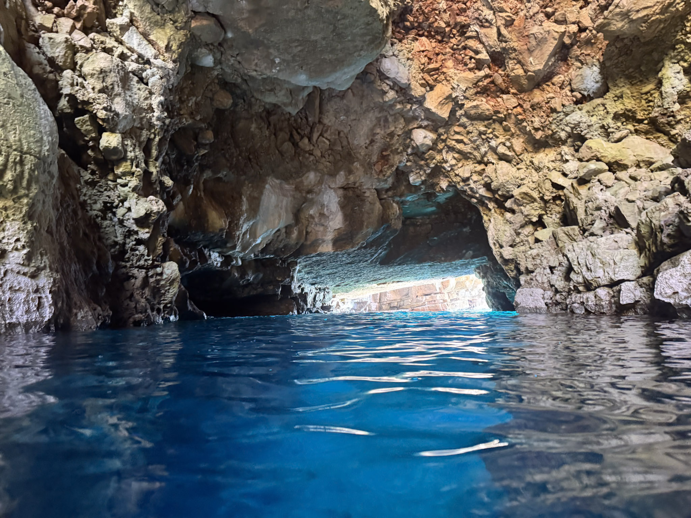
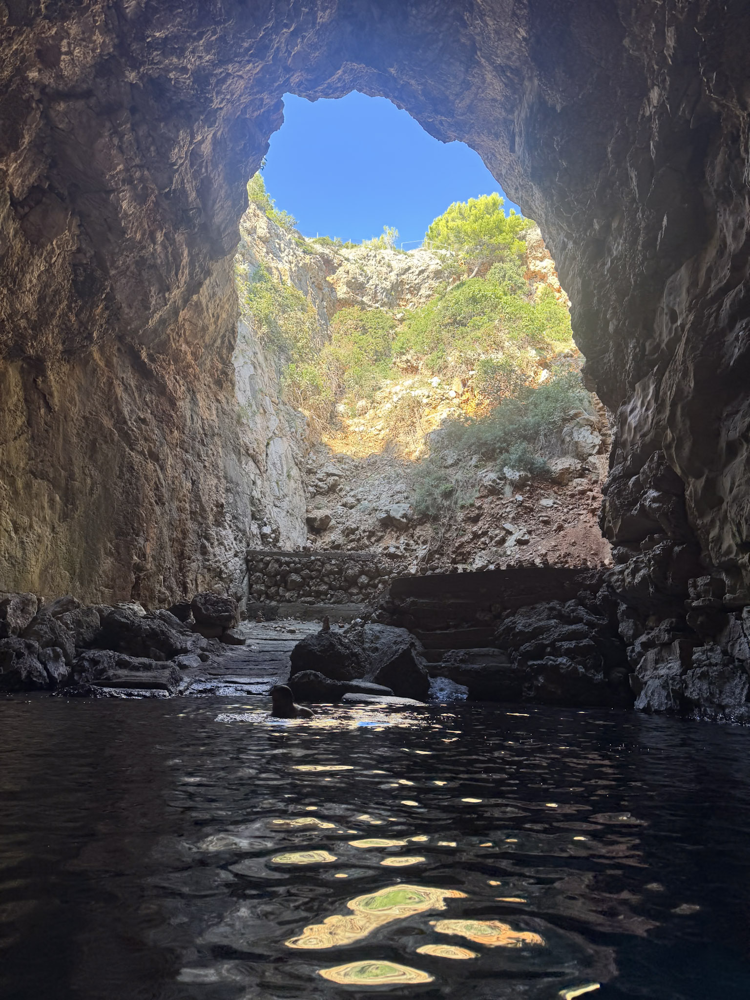
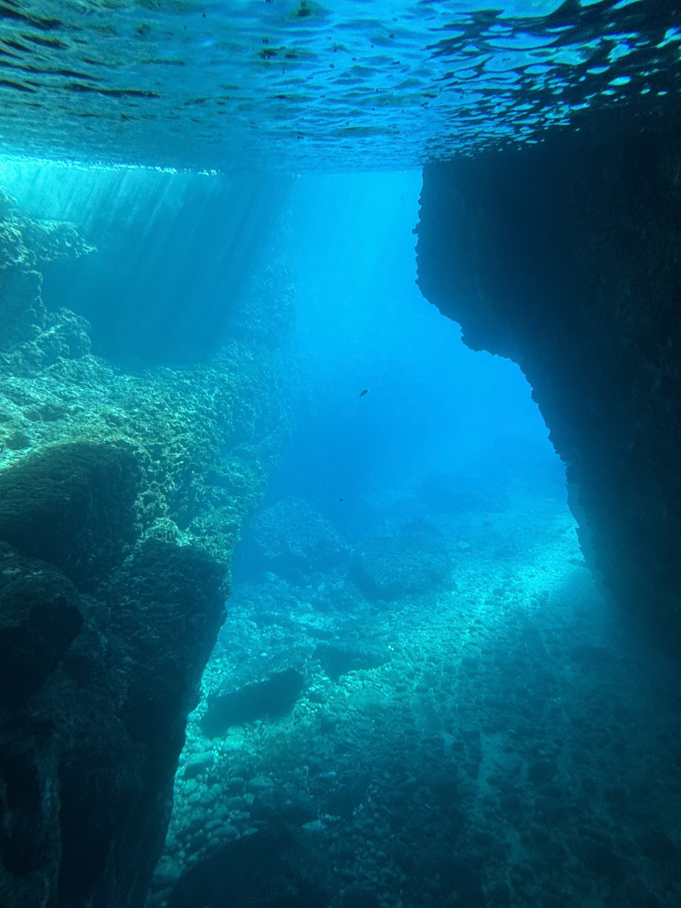
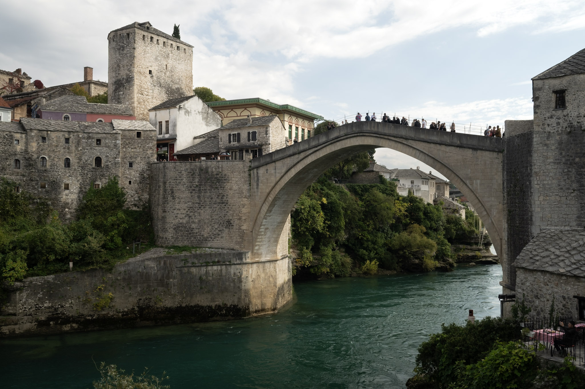
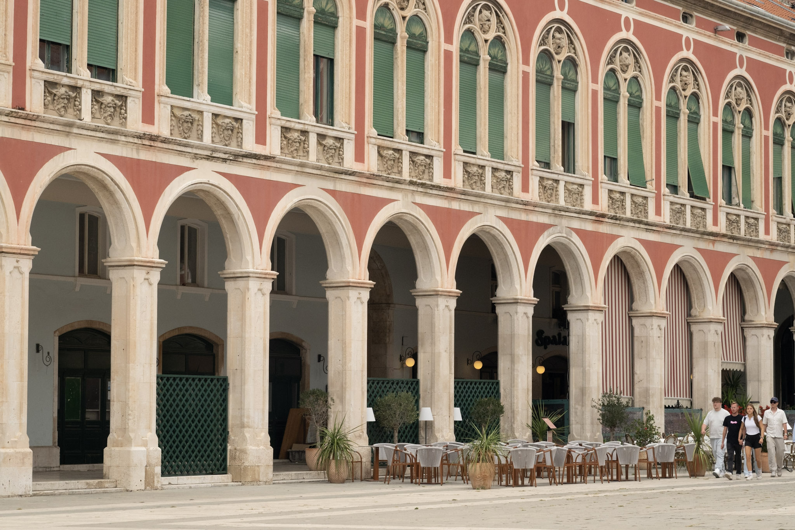
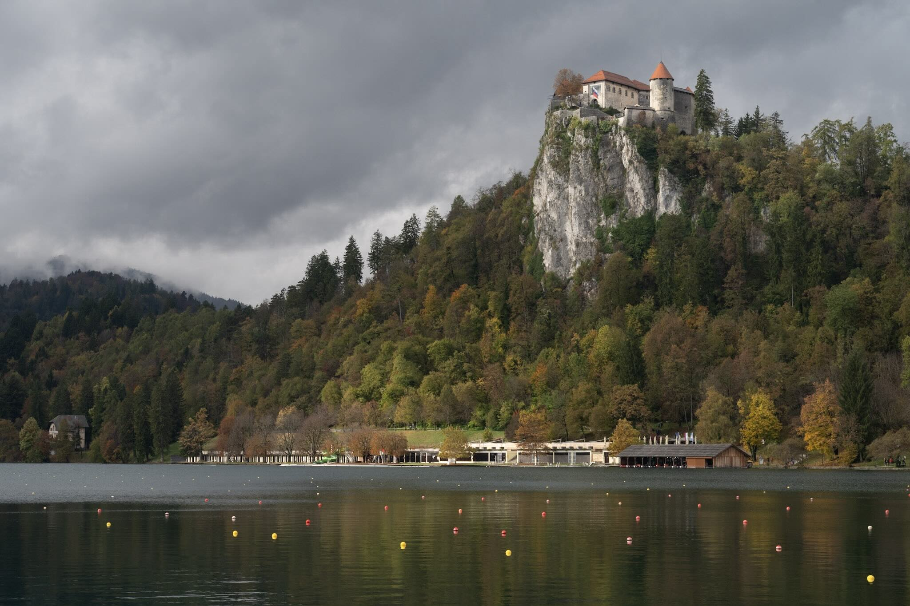
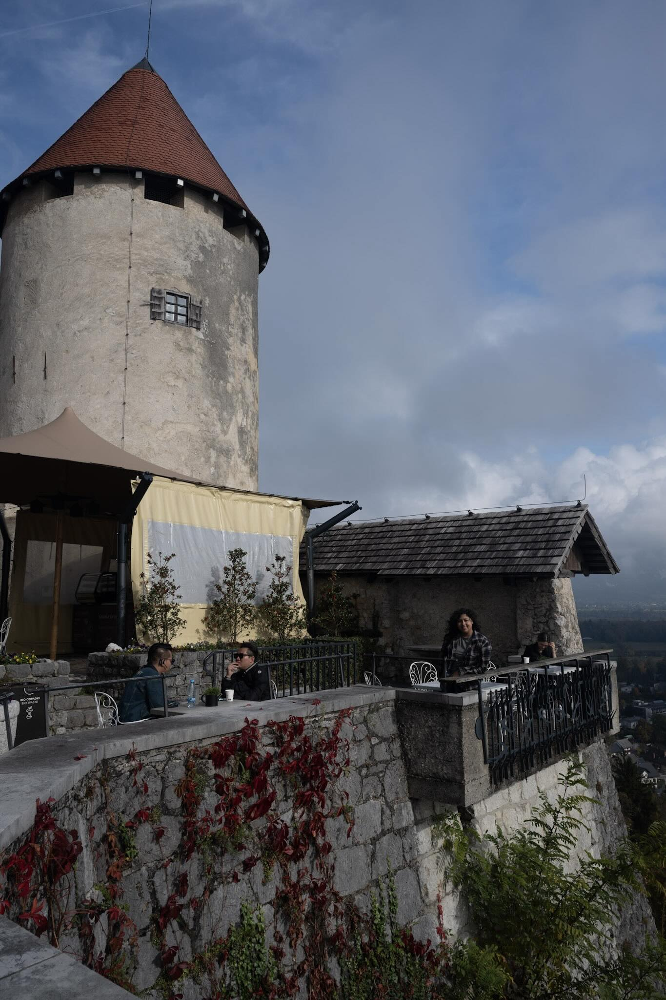

我2025年10月去欧洲放假。我想看很多黄色或者红色的叶子。我和我的朋友们一起去。
我去4个国家:
- 土耳其 (tǔ’ěrqí - Turkey)
- 伊斯坦布尔 (yīsītánbù’ěr - Istanbul)
- 克罗地亚 (kèluódìyà - Croatia)
- 杜布罗夫尼克 (dùbùluófūníkè - Dubrovonik)
- 斯普利特 (sīpǔlìtè - Split)
- 普利特维柴 (pǔlìtèwéicǎi - Plitvice)
- 波斯尼亚 (bōsīníyǎ - Bosnia)
- 莫斯塔尔 (mòsītǎ’ěr - Mostar)
- 斯洛文尼亚 (sīluòwénníyǎ - Slovenia)
- 布莱德湖 (bùláidéhú - Lake Bled)
土耳其🇹🇷
我们在土耳其开始放假。我们只去土耳其的首都，伊斯坦布尔。我们在伊斯坦布尔两个天。我们参加两个清真寺:蓝色的清真寺和圣索菲亚大教堂。 那些清真寺离得很近。
Mine: 伊斯坦布尔有一条江。江的西边在欧洲，但是江的东边在亚洲。
DeepSeek: 一条河把伊斯坦布尔分成两部分。西边在欧洲，东边在亚洲。

Mine: 我最喜欢伊斯坦布尔的方面是友好的猫。每个地方有很多流浪猫，但是不真的流浪。他们是社会的猫，大家都照顾它们。
DeepSeek： 我最喜欢伊斯坦布尔的一点是那里友好的猫。到处都有很多猫，虽然它们看起来像是流浪猫，但其实并不是真的在流浪。它们是社区的一份子，大家都会照顾它们。
Biggest corrections:
- （Vocab）每个地方： 到处 gets the same idea across，similar to “all the places” vs “everywhere”
- (Useful structure)： 虽然它们看起来像是流浪猫，但其实并不是真的在流浪 to describe appearance （看起来) vs reality （其实).
- 一份子：a part of, 社区：community （vs 社会 for society）.
我们在伊斯坦布尔吃饭平时不好。但不是不好吃，也不是好吃。我觉得很无聊的食物。
食物:
- Mine: 我们在伊斯坦布尔吃饭平时不好。但不是不好吃，也不是好吃。我觉得很无聊的食物。
- Deepseek had two alternatives, one simpler and one more natural:
- 简单的：我们在伊斯坦布尔吃的饭很一般。说不上不好吃，但也说不上好吃。我觉得味道很普通。
- 自然地：我觉得伊斯坦布尔的食物有点让人失望。没有什么特别的，味道很平淡。不难吃，但也不好吃。
- Feedback：
- You cannot use 无聊 （boring）for food
- 一般： I have seen used to mean usually, but it can also mean average
- 没有什么特别的：There is nothing special about it (all using phrases I know).
- 说不上。。。也说不上：You cannot say …, nor can you say …..
- 平淡: （new vocab) bland, flat
- Mine：但是我们吃一个好吃的晚饭。土耳其食物很好吃，但是伊斯坦布尔有很多游客，所以很多餐厅做不好质量的菜。那个天，游客去别地方。 如果你离开路人的郊区，你可以找到很好的餐厅。
- DeepSeek：但是，我们最后一晚吃了一顿很好吃的晚餐。土耳其食物很好吃，但是伊斯坦布尔游客太多，所以很多餐厅的菜质量不高。那天我们意识到一个问题：游客今天在这里，明天就去别的地方了。所以，在旅游区的餐厅不需要回头客，做菜也不用太认真。那天我们意识到，旅游区和其它地方差别很大。 如果你离开旅游区，就可以找到很好的餐厅。
- Feedback (with some massaging, as I originally had a typo that made my sentence unclear).
- 游客： tourist
- 旅游区：tourist area, not 旅游人去
- 差别很大：the difference is very big
- 郊区 (jiāoqū) specifically means “suburbs,” which are on the outskirts of a city. You are likely referring to the crowded central tourist areas, not the literal suburbs.
- 那个天，游客去别地方: meant to say “another day, tourists will be in a different place”, with the implication that restaurants didn’t have to make good food in the tourist area.
- Deep seek recommnded expanding this idea, and gave a simple and natural version.
- 简单的： 游客只会来一次，明天他们就去别的地方了。所以餐厅不担心客人会不会再来。
- 自然地： 那天我们意识到一个问题：游客今天在这里，明天就去别的地方了。所以，在旅游区的餐厅不需要回头客，做菜也不用太认真。
克罗地亚 🇭🇷
杜布罗夫尼克
从伊斯坦布尔到杜布罗夫尼克坐飞机需要两个小时。
杜布罗夫尼克很小的城市。我们住在杜布罗夫尼克三天。

《权力的游戏》是在杜布罗夫尼克拍的。
- Mine：杜布罗夫尼克是一部英语的电视剧的视频地方。那部电视剧是《权力的游戏》 (Quánlì de Yóuxì)： The Chinese name for Game of Thones （Power’s game）。
- DeepSeek: 杜布罗夫尼克是一部英语电视剧的拍摄地。那部电视剧就是《权力的游戏》。
- DeepSeek offered this alternative: 《权力的游戏》是在杜布罗夫尼克拍的。
New topic:
- Mine: 我们第三天在杜布罗尼克坐船，去附近的岛。一个岛有蓝色的洞穴。
- DeepSeek: 第三天，我们坐船从杜布罗夫尼克去了附近的岛。在一个岛上，我们看到了一个蓝色的洞穴。



波斯尼亚 🇸🇧
我们在波斯尼亚待的时间很短。我们从杜布罗夫尼克坐车到斯普利特，经过了莫斯塔尔。我们在莫斯塔尔只是吃了午饭，看了看老城市,那座著名的桥,和国家公园。

回克罗地亚 🇭🇷
斯普利特

普利特维采公园
斯洛文尼亚 🇸🇮
我们住在布莱德湖，那个镇又美又小。从普利特维采坐车到布莱德湖差不多需要五个小时。
布莱德旁边就有一个湖，湖里有一个小岛，岛上还有一座教堂。
布莱德湖在校山上有一个城堡。


回家
Again use the “via” sentence structure.
- 从 A 到 B，经过 C: From A to B, passing through C
- 从 A 到 B，在 C 转机/转车：From A to B, transferring through C
因为要回家，我们从布莱德湖坐车到了萨格勒布机场，路上用了六个小时。
我们从萨格勒布到美国，在伊斯坦布尔转机。
Useful Vocab
| 汉字 | English |
|---|---|
| 寺庙 | Temple |
| 清真寺秒 | Mosque |
| 教堂 | Church |
| 城堡 | Castle |
| —– | —— |
| 洞穴 | Cave |
| 转机 | Transfer |
Useful Grammar
- It takes Y hours to drive from A to B, or “A is a Y hour drive from B”:
- 从 + A + 到 + B + 坐 (method) + (time)
- Going via
- 从 A 到 B，经过 C: From A to B, passing through C
- 从 A 到 B，在 C 转机/转车：From A to B, transferring through C